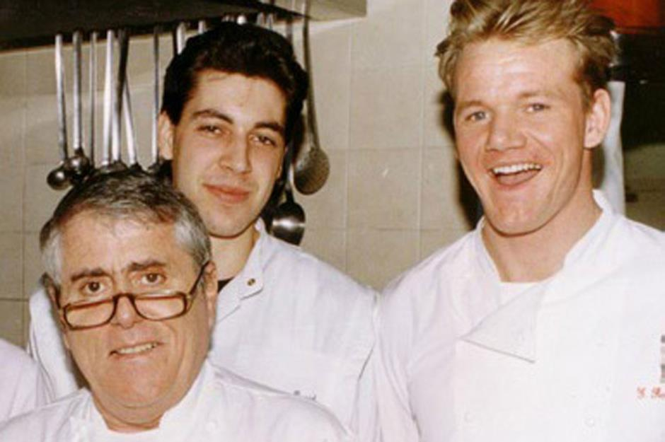

Gordon Ramsay Culinary Experience

- Earned a Vocational Diploma In Hotel Management From North in 1987.
- Studied under CHef Marco Pierre White at Harvey's and then under Chef Albert Roux at Gavroch.
- Ramsay then spent the early 90's traveling France, where he learnt French Cuisine by studying under master chefs Joël Robuchon and Guy Savoy.
- In 1993 Ramsay returned to London and became the Head Chef at Aubergine, which was awarded 2 Michelin Stars by 1996.
- In 1998 Ramsay opened his first restaurant, Restaurant Gordon Ramsay. Restaurant Gordon Ramsay had 3 Michelin Stars by 2001 and 24 years later still retains those Michelin Stars.
- In 1999 Ramsay opens Pétrus, which earned a Michelin Star in 7 months.
- Since then Ramsay has opened multiple restaurants worldwide. Currently he owns 90 restaurants that are open and ranging from fine dinning to casual.
- Gordon Ramsay has received a total of 17 Michelin Stars and currently still holds 7 of those stars.
- Restaurant Gordon Ramsay - Located in London, England
- Pétrus - Located in London, England
- Au Trianon - Located in the Waldorf Astoria, Versailles, France
- Le Pressoir d'Argent - Located in the InterContinental Bordeaux - Le Grand Hotel, Bordeaux, France
- Savoy Grill - Located in the Savoy Hotel, London, England
- Restaurant 1890 - Located in the Savoy Hotel, London, England
- Bread Street Kitchen - Multiple locations across the world in the UK, UAE and Thailand
- Street Pizza - Multiple locations across the world in the UK, USA, UAE, Malaysia, Thailand and South Korea
- Lucky Cat - Located in Mayfair, London, England
- Hell's Kitchen - Multiple Locations in the USA
Awards
- Throughout his career, Gordon Ramsay and his restaurants won many awards.
- In 2001, his restaurant, Restaurant Gordon Ramsay, was voted Top Restaurant in the UK according to the London Zagat Survey. This is when this restaurant was also awarded a third Michelin star.
- In 2006, he was appointed Officer of the Order of the British Empire by Queen Elizabeth II. He also won his third Catey award, being only one of three people to have won three Catey awards. He was also named most influential person in the UK hospitality industry in the Caterersearch 100 list. Also, this year he was nominated for the Rector of the University of St Andrews, but he lost.
- In 2013, Gordon Ramsay was put into the Culinary Hall of Fame.
- In 2017, Ramsay set a Guinness World Record for the fastest time to fillet a 10 pound fish. He achieved his record with a time of 1 minute and 5 seconds. This year Ramsay also set the Guinness World Record for the longest pasta sheet rolled in sixty seconds.
- In 2022 Ramsay was recognized as one of the 100 Most Powerful People In Global Hospitality by the International Hospitality Institute.
- In 2023, he then set the Guinness World Record fot the largest Beef Welling, at a weight of 56.79 pounds.